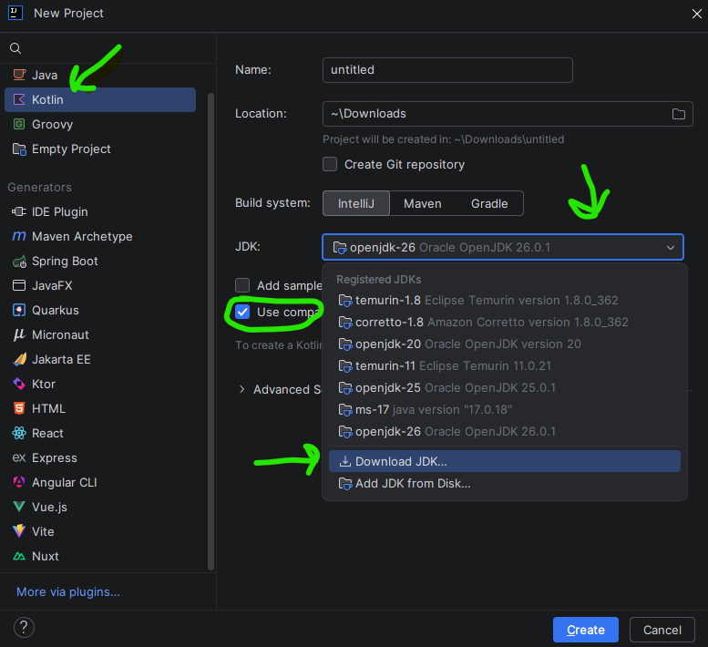
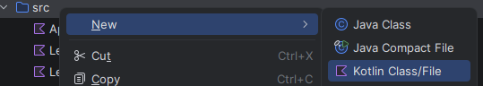
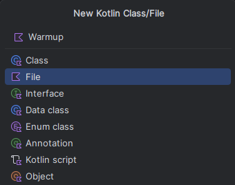

Start a Kotlin Project
- Open IntelliJ IDEA and choose New Project.
- Choose Kotlin as the language.
- In the JDK area, choose Download JDK and select version 26.
- Choose a meaningful project name and folder location, then create the project. IntelliJ saves the whole project and its code files in that location, so choose a folder you will recognize later.
The JDK is the software IntelliJ uses to compile and run Kotlin programs. The project wizard can download it for you, so you do not need to locate it separately.

Put Source Code in src
The src folder is where the project keeps your Kotlin source code. Put the files you write for this course there.
- In IntelliJ's Project tool window, find the
srcfolder. - Right-click
src, choose New, then choose Kotlin File. - Give the file a useful name, such as
Warmup. IntelliJ creates a file namedWarmup.kt.

src, choose New, then choose Kotlin Class/File.
Warmup, select File, and confirm to create Warmup.kt.In this course, a .kt file contains loose, top-level definitions: functions, names made with val, and type definitions. We will not organize our programs around Object-Oriented Programming like Kotlin or Java classes.
fun welcome(name: String): String = "Welcome, $name!"
fun main() {
println(welcome("CS1101"))
}
Both definitions above can appear directly in Warmup.kt; neither needs to be inside a class.
Practice
- Which language should you choose when creating this course's project?
- Which JDK version should you download?
- Where should a new Kotlin source file be added?
- What file ending should a new Kotlin file have?
Check your answers
1. Choose Kotlin.
2. Download JDK version 26.
3. Add it in the project's src folder.
4. A Kotlin source file ends in .kt.